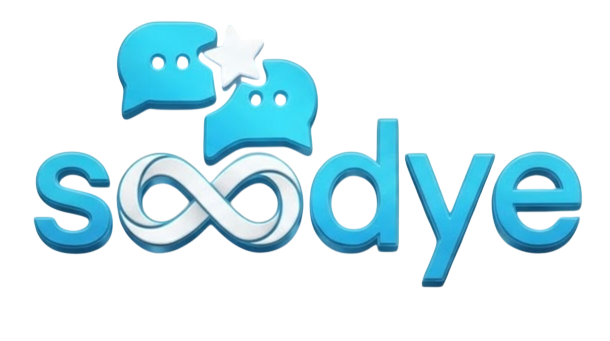

هلا يبوي، سودي لديكم لا خوف عليكم.
يرجى اختيار وسيلة الدخول للمتابعة:
تسجيل الدخول عبر Google
المتابعة كضيف
الأخطاء (0)
دعوة
عام
كودنق
دراسة وأبحاث
توليد صور
غير مقيد
US
الوضع: جاهز
متصل
⚡ التحويل التلقائي الذكي (افتراضي)
نمط: واقعي
الأبعاد:
1:1 مربع
16:9 شاشة عريضة
9:16 ريلز وستوري
4:3 قياسي
21:9 بانوراما فائقة
عرض الصورة بالدقة الكاملة
عرض بملء الشاشة (جداول وأكواد)
حذف هذه المحادثة؟
سيتم مسح كافة الرسائل والمرفقات نهائياً والبدء بمحادثة جديدة نظيفة.
حذف المحادثة
تراجع
منطقة خاصة: وضع US
هذا النموذج مسموح لماي فاذر وماي ماذر فقط
دخول
إلغاء
إنشاء مجموعة حية
إنشاء
إلغاء
دعوة للانضمام لمجموعة
جاري جلب البيانات...
انضمام
إلغاء
سينمائي واقعي (Realistic)
أنمي ياباني (Anime Art)
برومبت مخصص (Custom)
تنبيه النمط المخصص
يجب كتابة البرومبت المخصص
باللغة الإنجليزية
بتفاصيل دقيقة.
يُفضل استخدام وضع الشات (عام أو كودنق) ليقوم بصياغة برومبت متكامل ومفصل ثم نسخه هنا.
فهمت ذلك، متابعة
سجل تشخيص الأخطاء والتحويلات
نسخ الكل
لا توجد أخطاء مسجلة حتى الآن.